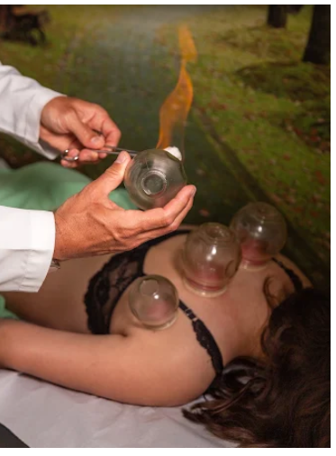
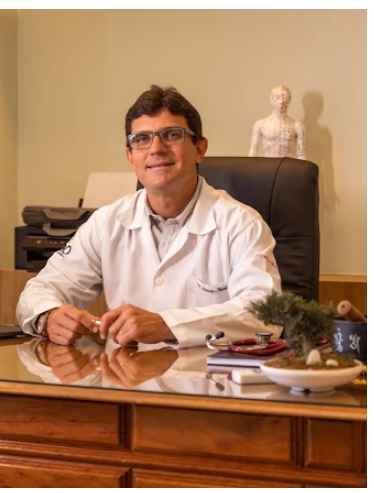

Tratamentos personalizados com foco em Medicina Integrativa, Acupuntura Médica e Fitoterapia Chinesa para devolver a harmonia ao seu corpo e mente, tratando a raiz do problema.
AGENDAR UMA AVALIAÇÃO


Dores crônicas, estresse persistente, insônia e desequilíbrios metabólicos são sinais de que seu organismo perdeu a autorregulação. Medicar a dor isoladamente apenas mascara o problema, sem resolver sua causa raiz.
Dores de cabeça, enxaquecas e dores crônicas que limitam sua produtividade e bem-estar diário.
Ansiedade, insônia e estresse físico e mental acumulados pela rotina moderna.
Dificuldade em encontrar um tratamento médico que compreenda sua saúde como um todo e não de forma fragmentada.
Soluções profundas de Medicina Integrativa para promover a autorregulação e o equilíbrio natural do seu corpo.
Abordagem médica global que analisa o paciente em seus aspectos físicos, mentais e de estilo de vida para tratamentos mais assertivos e personalizados.
Estímulos de pontos estratégicos para regulação do sistema nervoso, alívio de dores crônicas, redução do estresse, ansiedade e melhora sistêmica.
Prescrição individualizada de fórmulas herbais milenares que agem sinergicamente no organismo, devolvendo a vitalidade e tratando desequilíbrios internos.
Práticas integrativas que aceleram a recuperação do paciente, auxiliando no manejo de estresse emocional, dores articulares e fadiga.
Sob a direção e responsabilidade técnica do Dr. Antonio Luiz Maciel, a Clínica Tao foi idealizada como um espaço de acolhimento focado na conexão profunda entre a medicina e a consciência. Acreditamos que a saúde não é apenas a ausência de doenças, mas sim um estado dinâmico de equilíbrio físico, mental e energético.
Unindo a precisão do diagnóstico clínico à sabedoria milenar da Acupuntura, Fitoterapia Chinesa e Terapias Complementares, oferecemos um plano terapêutico integrativo que respeita a individualidade biológica de cada paciente.

Histórias reais de quem resgatou o equilíbrio físico e emocional na Clínica Tao.

"Excelente atendimento, vi resultado na primeira semana, tratamento fantástico! Estou muito satisfeita!"

"Atendimento humano, desde a recepção até o médico. Equipe maravilhosa e competente."

" Só tenho a agradecer por existir médicos com essa especialidade, pois descobrir acupuntura nessa elogiada clínica acolhedora e que cuidou de todos os meus problemas e dando cura total sem remédios. Fui tratado somente com agulhas e ventosas. Obrigado a todos que fazem parte do atendimento e parabéns especial ao médico Dr. Antonio Luiz, acupunturista que tratou minhas dores de Lombar e Ombros. Super recomendo."
Seu atendimento é realizado presencialmente em nosso moderno consultório localizado no coração do bairro Jardins, em Aracaju.
Entre em contato pelo WhatsApp. Nossa equipe entenderá suas principais queixas para direcionar sua consulta integrativa.
Realizamos uma análise completa do seu estilo de vida, queixas físicas e energéticas para estruturar seu plano personalizado.
Damos início às sessões clínicas de acupuntura, prescrição de fitoterapia chinesa e orientações de bem-estar contínuo.
Tem dúvidas sobre como a medicina integrativa ou as terapias complementares podem te ajudar? Converse conosco:
TIRAR DÚVIDAS NO WHATSAPPÉ uma abordagem médica focada na saúde integral do indivíduo, e não apenas no tratamento de doenças isoladas. Ela combina a medicina convencional de excelência com tratamentos baseados em evidências, como a Acupuntura e a Fitoterapia, integrando mente, corpo e estilo de vida.
A Fitoterapia Chinesa utiliza fórmulas compostas por plantas medicinais específicas que ajudam a restabelecer as funções orgânicas, otimizando o metabolismo, reduzindo inflamações, melhorando a imunidade e equilibrando o fluxo de energia vital.
Nossos atendimentos médicos são exclusivamente particulares, o que nos possibilita realizar consultas longas, minuciosas e humanizadas. Emitimos nota fiscal e recibo detalhado para que você possa solicitar o reembolso de forma prática junto ao seu plano de saúde.
A acupuntura é extremamente segura quando realizada por um médico qualificado. As agulhas utilizadas são extremamente finas (muito menores que as de injeção), o que torna o processo praticamente indolor. A maioria dos pacientes relata uma sensação profunda de relaxamento e bem-estar durante a aplicação.
Visite nosso moderno consultório ou agende seu horário por WhatsApp:
Av. Dr. José Machado de Souza, 120 - Sl 1418 - Jardins, Aracaju - SE, 49025-740
(79) 98891-7273
Segunda a Sexta: Com agendamento prévio